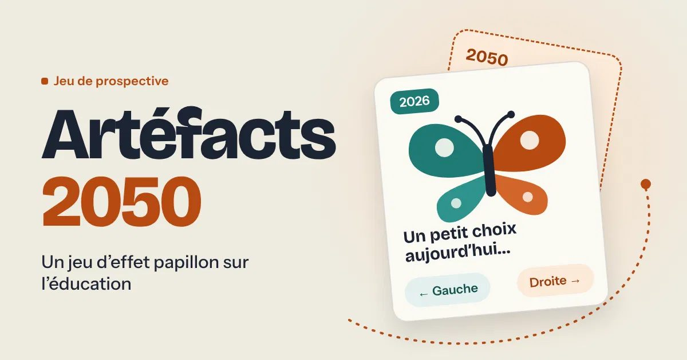

Jeu de prospective
Artéfacts 2050
Un jeu d'effet papillon sur l'éducation au Québec : choisir une fiche de prospective, prendre six décisions de 2026 à 2045, puis découvrir l'école qu'elles dessinent en 2050. Environ cinq minutes par partie.

- Objet
- Jeu sérieux de prospective, jouable dans le navigateur
- Date
- 2026
- Durée
- Environ cinq minutes par partie
- Rôle
- conception, écriture, développement ?
- Outils
- technologies utilisées
La question
Comment faire sentir, en quelques minutes, que de petites décisions d'aujourd'hui façonnent l'école de 20501Formulation proposée à partir du sous-titre du jeu ; à valider. ? Le jeu emprunte la logique de l'effet papillon : chaque choix déplace la trajectoire.
Les cinq fiches de prospective
- Apprentissage, IA générative et autonomie intellectuelle
- Adaptation climatique et communautés éducatives
- Mobilité sociale, équité et contrat éducatif
- Formation continue, transitions et nouvelles trajectoires de vie
- Citoyenneté, confiance et cohésion sociale
Démarche et résultat
Le jeu distingue les constats sourcés des hypothèses de prospective. Sources citées : OCDE (dont l'enquête PISA 2022), UNESCO, UNICEF, CEDEFOP, Conseil de l'Union européenne, Forum économique mondial (Future of Jobs Report 2025), MIT Media Lab, Pew Research Center, travaux de Xavier St-Denis et Matissa Hollister.
étapes de conception, public visé, retours des joueurs